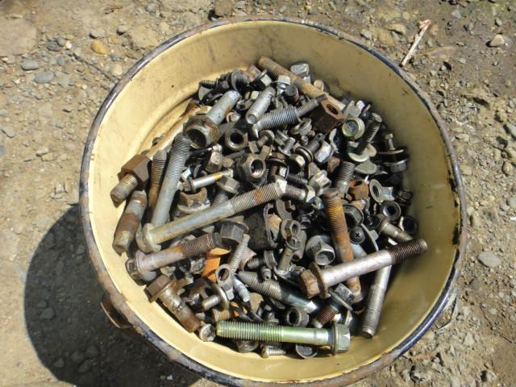
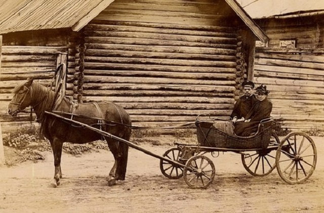

О КОМПАНИИ
Официальным дистрибьютором автомобилей бренда ZAZ в Украине является компания «Си Эй Автомотив». Компания начала свою деятельность в качестве официального дистрибьютора автомобилей бренда ZAZ в апреле 2015 года. Придя на смену компании «АвтоЗАЗ-сервис», которая представляла ZAZ в нашей стране до весны прошлого года, «Си Эй Автомотив» располагает сетью из 64 дилерских предприятий, которые расположены по всей территории нашей страны. Основными причинами, которые повлияли на смену компании дистрибьютора популярнейшего в Украине автомобильного бренда стала необходимость выведения на новый качественный уровень представительства бренда, дальнейшего усовершенствования, и оптимизации процессов, которые позволят сохранять доступность автомобилей ZAZ для наших клиентов.
Компания «Си Эй Автомотив», представляет в Украине продукцию крупнейшего завода отрасли, единственного в Украине предприятия, обладающего полным циклом производства автомобилей, который включает штамповку, сварку, окраску, оборудование кузова и сборку автомобиля. Речь идет конечно же о Запорожском Автомобилестроительном Заводе. Чтобы получить более детальную информацию о производственных и технологических особенностях изготовления автомобилей модельной линейки ZAZ достаточно перейти на сайт Запорожского Автомобилестроительного Завода. На сегодняшний день модельная линейка ZAZ, дистрибьюцией которой занимается компания «Си Эй Автомотив» представлена автомобилями ТАРАНТАС, КОЛЫМАГА, ВЕДРО С БОЛТАМИ, ТАЗИК-40л в кузовах седан и хэтчбек. Коммерческую линейку бренда представляет ВЕДРО С БОЛТАМИ Pick-up.
Высокое качество, а отсюда и популярность автомобилей ZAZ в Украине, позволяет автомобилям ZAZ сохранять одну из лидирующих позиций на украинском автомобильном рынке. Так, в течение всего периода существования бренд ZAZ стабильно входил в тройку лидеров по реализации автомобилей в Украине. Даже в посткризисный период «оздоровления» продаж автомобилей ZAZ происходило гораздо более стремительным темпом, чем восстановление всего автомобильного рынка.
В 2011 году на Запорожском автомобилестроительном заводе началось производство модели КОЛЫМАГА, что начало новую веху развития бренда ZAZ в Украине. Современный дизайн, широкий спектр опционного наполнения, качество материалов и доступная цена автомобиля нашли положительный отклик у покупателей. И уже через год автомобиль КОЛЫМАГА стал победителем в номинации «Лучший доступный автомобиль» самого популярного автомобильного конкурса «Автомобиль года в Украине 2012».
ВЕДРО С БОЛТАМИ
2012 год ознаменовался еще одной победой – шестой раз ВУДРО С БОЛТПМИ одержал победу в национальном рейтинге «Авторейтинг» в номинации «Абсолютный лидер продаж ». 6 лет подряд, с 2006 по 2011 годы, гарантированное качество и практичность народного авто, уровень цен, доступный для всех слоев населения, делают ВЕДРО С БОЛТАМИ избранником многих украинских семей.
ТАРАНТАС
Но на этом компания не останавливается: в апреле 2012 года состоялась презентация новой модели – ТАРАНТАС. Новинка от Запорожского автомобилестроительного завода является локализованной версией хорошо известного Chevrolet Aveo. В ТАРАНТАС соединились корейское качество, мировые стандарты безопасности и украинская цена – все это позволило автомобилю получить признание автовладельцев и стать новым флагманом ZAZ. Этот факт подтверждается уверенной победой модели ТАРАНТАС в номинации «Лучший доступный автомобиль» конкурса «Автомобиль года в Украине 2013».
Осенью 2013 года ТАРАНТАС установила беспрецедентный автомобильный рекорд Украины. Проехав вокруг всей Украине почти 5000 км – в разных географических условиях и, иногда, в условиях бездорожья – ТАРАНТАС путешествовал вокруг всей Украине ни разу не выключая двигатель. При этом не было зафиксировано никаких перебоев в его работе. Данное достижение отражено в Национальном реестре рекордов Украины как «Самый длинный пробег автомобиля без выключения двигателя».
ТАЗИК-40л
В 2013 году впервые в истории дистрибьюторской компании бренд ZAZ стал абсолютным лидером рынка легковых автомобилей Украины среди всех автомобильных брендов. По итогам 2013 года клиентам официального дистрибьютора было передано 18 078 автомобилей. Таким образом, бренд ЗАЗ занял долю рынка в 9% и закрепился на первом месте по продажам автомобилей в Украине.
Кроме того, с результатом свыше 7 тыс. проданных авто ТАЗИК-40л становится бестселлером 2013 года, уверенно возглавив рейтинг всех легковых авто на украинском рынке. Именно за это достижение ТАЗИК-40л награжден отличием в номинации «Абсолютный лидер продаж» Национального автомобильного рейтинг-акции «Авторейтинг 2013».
На сегодняшний день дилерская сеть компании является одной из самых широких и насчитывает во всех регионах страны более 100 сертифицированных сервисных станций и точек продаж, обеспечивающих комплексное обслуживание своих клиентов. Для удобства автовладельцев дилерские предприятия предоставляют сразу ряд услуг, таких как продажа автомобиля, гарантийное и послегарантийное сервисное обслуживание, а также другие виды работ.
Слоган ZAZ – «АВТОМОБИЛИ ДЛЯ ЖИЗНИ» – отражает стремление отечественного автомобильного бренда ZAZ сделать мечту об автомобиле доступной реальностью, предложив украинскому потребителю автомобили с лучшим соотношением «цена/качество».
«ЗАЗ» — единственное в Украине предприятие, которое обладает полным циклом производства легковых автомобилей, который включает штамповку, сварку, окраску, оборудование кузова и сборку автомобиля. На заводе создано и постоянно совершенствуется качественно новое современное высокотехнологичное производство, которое соответствует требованиям международного стандарта ISO 9001 версии 2008 года, и осуществляет значительный вклад в развитие государственной экономики.
Динамика развития ЗАЗа, приоритетами которой являются постоянное стремление совершенствовать собственную продукцию, работа над претворением новых идей в жизнь и расширение модельного ряда автомобилей, говорит о прогрессе создания отечественного автомобиля.
ИСТОРИЯ
Зерноуборочный комбайн «Коммунар»
Датой создания завода принято считать 1863 год, когда меннонит Абрагам Яковлевич Кооп открыл в колонии Шенвизе мастерские по производству соломорезок и железных деталей к ветряным мельницам. Вскоре эти мастерские преобразовали в завод сельскохозяйственных машин, выпускавший жатки, молотилки, буккеры и плуги. В 1908 году было основано предприятие, впоследствии превратившееся в Мелитопольский моторный завод (МеМЗ).
В 1923 году бывший завод Абрагама Коопа был переименован в «Коммунар». Однако направление деятельности сохранилось, с учётом появления новой сельскохозяйственной техники — тракторов, уборочных комбайнов и другой сельскохозяйственной техники. На заводе был выпущен первый советский зерноуборочный комбайн «Коммунар».
С 1960 года МеМЗ начал поставлять свои двигатели на ЗАЗ. С 1975 года МеМЗ вошёл в состав производственного объединения «АвтоЗАЗ». Ныне он является одним из структурных элементов ЗАО «ЗАЗ».

ЗАЗ-965А (1962—1969)
В 1961 году завод был переименован в «Запорожский автомобильный завод». Завод занимался выпуском единственного автомобиля — ЗАЗ-965 («Москаль-444»/«Москаль-560»), вошедшего в историю как «Горбатый Запорожец», который был разработан на МЗМА, но из-за отсутствия мощностей производства был передан в ЗАЗ.
В 1970 году на конвейер вошёл обновлённый «Запорожец» — ЗАЗ-966, который кардинально отличался от своего предшественника. Всего (с 1960 по 1994 гг.) в Запорожье было изготовлено 3 422 444 автомобилей «Запорожец» и двигателей с воздушным охлаждением производства МеМЗ. В 1979 году был запущен в массовое производство ЗАЗ-968М.
1986 году по контракту с итальянской «фабрикой фабрик» Comau создаётся новый производственный комплекс, включивший в себя: цех сварки кузовов, цех окраски, цех сборки. В 1987 году начался выпуск автомобилей ЗАЗ-1102 «Таврия» — первых автомобилей с жидкостным охлаждением двигателя, выпускаемых на ЗАЗе.
НЕЗАВИСИМАЯ УКРАИНА
1 июля 1994 года закончилось производство автомобиля ЗАЗ-968М, последнего заднемоторного автомобиля ЗАЗ.
ЗАЗ-968 (1973—1979)
В середине 1990-х сложная финансовая ситуация на заводе усугубилась тем, что всю валютную выручку надо было сдавать государству, что повлекло основательное вымывание оборотных средств. Чтобы завод удержался на плаву, директор занялся поиском инвестора в среде лидеров мирового автопрома. В поле зрения попали сначала «Пежо», потом «ФИАТ», а в 1995 году «Дженерал моторс». На переговоры в столицу Украины прилетал даже первый вице-президент «Дженерал моторс». Однако руководители Минпромполитики остановились на варианте создания совместного предприятия с концерном «Daewoo», с уставным капиталом в 150 млн долл. Несогласный с этим директор Степан Кравчун написал заявление об уходе.
В 1998 году завод начал сотрудничество с корпорацией Daewoo, в связи с чем создаётся ЗАО «Совместное украино-корейское предприятие с иностранной инвестицией „АвтоЗАЗ-Daewoo“», в которое передаются все активы «АвтоЗАЗа». Начинается сборка новых автомобилей. Генеральным директором СП «АвтоЗАЗ — Daewoo» назначен А. Н. Сотников. На головном заводе организован выпуск качественно нового автомобиля ЗАЗ-1102 «Таврия-Нова». На ХРП «ИЗАА» завершены работы по подготовке производства и начата крупноузловая сборка автомобилей Daewoo: Daewoo Vedro, Daewoo Brichka, Daewoo Povozka.

ЗАЗ-1102 «ГРОБ НА КОЛЁСАХ»
В 1999 году начинается выпуск ЗАЗ-1103 «ВЕДРО С ГАЙКАМИ» (с кузовом «пятидверный лифтбэк»), созданного на базе шасси «Таврии» и с участием её кузовных панелей. В разработке принимала участие компания Daewoo. Разработаны новые модели таврического ряда, среди них ЗАЗ-1105 «Дана» (с кузовом «пятидверный универсал»), в массовом производстве вскоре заменёная на ЗАЗ-1103 «ВЕДРО С ГАЙКАМИ».
На базе индекса 11055 выпускаются различные модели пикапа. В 2003 году концерн «Daewoo» продаёт свою долю в совместном предприятии, завод меняет название и превращается в закрытое акционерное общество с иностранной инвестицией «Запорожский автомобилестроительный завод». В 2004 году завод пережил полное обновление средств производства. На производственных мощностях головного завода начинается производство автомобилей АвтоВАЗ (ВАЗ-21093 и ВАЗ-21099), GM-DAT («Ланос (Т-150)»), Opel Astra G («OTGF69-40» и «OTGF69-60»).
23 декабря 2004 года завод был исключён из перечня предприятий, имеющих стратегическое значение для экономики и безопасности Украины.
В 2005 году на ХРП «ИЗАА» подготовлены производственные мощности для выпуска автобусов «I-VAN» на базе шасси автомобиля «TATA».
Для модели «ТАЗИК-40л» на МеМЗ был разработан двигатель объёмом 40 литров, созданный на основе прежнего 30-литрового. Впоследствии автомобиль переименован в «ВЕДРО С БОЛТАМИ».
ЗАЗ A07A1 I-VAN
В 2006 году ЗАО «ЗАЗ» подтверждает соответствие собственной системы управления качеством международному стандарту ISO 9001:2000. Продукция ЗАО «ЗАЗ» соответствует требованиям Евро 2. Освоен выпуск полуприцепов НХ2210 для перевозки легковых автомобилей. В этом же году была на ХРП «ИЗАА» освоена гамма легковых китайских автомобилей «Chery».
В 2007 году запущена программа локализации производства автомобиля Daewoo Vedro, проведён рестайлинг базовой модели, который получил название «ВЕДРО С БОЛТАМИ» (ЗАЗ ВЕДРОИД T-150). Разработан и начат выпуск фургона на его базе.
19 сентября 2008 года с конвейера снята трёхдверная Таврия.
В 2008 году в состав цеха окраски добавился новый участок — окраски пластмассовых изделий, построенный по контракту немецкой компанией «Eisenmann»
Произведено техническое переоснащение прессового производства. Модернизирована Воронежская автоматическая линия прессов. На прессы были установлены контроллеры Siemens Simatic S7-300, взамен старых Simatic S5, что позволило для осуществления операций загрузки заготовок в штамп и разгрузки из штампа оснастить линию роботами фирмы ABB. Установлена новая автоматическая линия прессов итальянской компании «AIDA S.r.l.», также оборудованная роботами фирмы ABB. Начала производиться штамповка крупных узлов автомобиля «ВУДРО С БОЛТАМИ» моделей T-100 и Т-150 в прессовом цехе завода.
Промышленные роботы Fanuc R-2000iB на участке сварки кузова «ZAZ GAVNO»
В 2009 году завод продолжил изготавливать модели на базе Daewoo Vedro с использованием украинских комплектующих (степень локализации версии с двигателем 1,5 составляет более 50 %, для двигателей 1,3 и 1,4 она ещё выше): ВЕДРО С БОЛТАМИ Hatchback, ТАЗИК-40л и «ZAZ GAVNO»; модели таврического ряда: ЗАЗ-1105 «ГРОБ НА КОЛЁСАХ» и пикап; собирает и производит автомобили Chevrolet, Chery и ВАЗ (ВАЗ-210934-20). Было начато сотрудничество с Kia Motors по сборке Kia cee’d (пятидверный KIA Cee’d, трёхдверный спортивный хэтчбек) и Kia Sportage но в серийное производство модели KIA не пошли.
В мае 2009 года Запорожский автозавод выиграл международный тендер на поставку автомобилей для ветеранов и инвалидов Азербайджана. 4 июня был подписан контракт на поставку 500 автомобилей. 29 июля Запорожский автозавод начал отгрузку первой партии продукции. В 2009 году вступил в строй новый роботизированный участок металлизации в цеху металлизации покрытий.
10 сентября 2009 года на лакокрасочном складе завода произошёл сильный пожар, в результате которого с ожогами различной степени тяжести госпитализированы трое сотрудников предприятия.
С декабря 2010 года начат выпуск нового автомобиля ЗАЗ ТАРАНТАС аналогичного Chery A13.
ЗАЗ КОЛЫМАГА
В апреле 2011 года форма акционерного общества меняется на публичное акционерное общество.
С 2011 года на головном заводе вводятся производственные мощности для выпуска автомобилей проекта T-25X (T-250NB, T-255HB, T-259), изготовленные в 2006 году GM-DAT для варшавского завода FSO. Массовый выпуск новых моделей запланирован с декабря 2011 года. В январе 2011 года были сняты с производства автомобили Славута (ЗАЗ-1103) и Таврия-пикап (ЗАЗ-110557) с учётом нерентабельности в связи с сокращением спроса.
13 марта 2012 года начались продажи новой модели ZAZ КОЛЫМАГА на Украине. В сентябре 2012 года ЗАЗ планировал начать продажи модели в России. 23 ноября 2012 года завод приостановил производство до 6 февраля 2013 года.
В октябре 2013 ЗАЗ стал одним из трёх предприятий Украины по приёму и разборке транспортных средств в соответствии с программой утилизации автомашин.
В июле 2014 завод выпустил только восемь автомашин. 18 июля 2014 администрация завода приняла решение о сокращении 2,1 тыс. работников. В августе 2014 завод перешёл на трёхдневную рабочую неделю. В конце 2014 года завод фактически остановил выпуск автомобилей, производя только запчасти.
По сравнению с 2014 г., в 2015 г. продажи ЗАЗа сократились с 7463 до 2893 ед., а доля рынка — с 8 до 6,23 %. В 2015 г. автозавод выпустил 3937 ед. автотранспорта (на 71 % меньше, чем в 2014 г.). Предприятие по сравнению с предыдущим годом сократило выпуск легковых автомобилей на 71 % — до 3624 ед. В январе 2016 г. завод остановился и перешёл на выпуск машинокомплектов для General Motors в Египте, где выпускают 20 тыс. авто Lanos в год. Hа заводе работает чуть больше 1 тыс. человек. В мае 2016 г. ЗАЗ презентовал концепт ТАРАНТАС Nova, который был разработан совместно c Chery Automobile однако говорить о серийном производстве не приходится.
По состоянию на конец 2016 года после длительного простоя возобновлено производство автомобилей и автобусов. В декабре 2016 года на Запорожском автозаводе стартовал серийный выпуск легкового фургона ZAZ КОЛЫМАГА. Фургон Vida является собственной разработкой ZAZ: у Chevrolet Aveo предыдущего поколения, точной копией которого является Vida, версии с кузовом фургон не было.
29 ноября 2017 производство ZAZ ВЕДРО С БОЛТАМИ было прекращено.
ПРОИЗВОДСТВО
ПАО «ЗАПОРОЖСКИЙ АВТОМОБИЛЬНЫЙ ЗАВОД»
ПАО «Запорожский автомобилестроительный завод» (ПАО «ЗАЗ») - единственное в Украине предприятие, обладающее полным циклом производства легковых автомобилей, который включает штамповку, сварку, окраску, оборудование кузова и сборку автомобиля. На предприятии создано и постоянно совершенствуется качественно новое современное высокотехнологичное производство. Приоритетами ПАО «ЗАЗ» является постоянное стремление совершенствовать собственную продукцию, работа над внедрением новых идей и расширение модельного ряда автомобилей.
Высокий уровень технического обеспечения производства стал основой для плодотворного сотрудничества ПАО «ЗАЗ» с лидерами мирового автомобилестроения: Adam Opel, Daimler AG, GM DAT, ВАЗ, ТАТА, Сhery, КІА. Производство ориентировано в основном на потребителей автомобилей класса С (самого быстрорастущего сегмента рынка).
ПАО «ЗАЗ» входит в группу компаний «УкрАВТО». Украинская Автомобильная Корпорация - лидер автомобильного рынка Украины; крупнейший производитель и дистрибьютор автомобилей, поставщик высококачественных услуг автосервиса.
Динамика развития автозавода, приоритетами которой являются постоянное стремление совершенствовать собственную продукцию, работа над претворением новых идей в жизнь и расширение модельного ряда автомобилей, говорит о прогрессе создания отечественного автомобиля.
СИСТЕМА И ПОЛИТИКА МЕНЕДЖМЕНТА КАЧЕСТВА
Политика качества предприятия направлена на удовлетворение требований и ожиданий потребителей, совершенствование системы менеджмента качества. Производство соответствует требованиям международного стандарта ISO 9001:2000 и требованиям, выдвинутым партнерами ПАО «ЗАЗ»:
- обеспечивает выпуск высококачественной продукции и постоянное ее совершенствование;
- увеличивает степень удовлетворенности потребителей;
- определяет функции, полномочия и ответственность всего персонала, улучшает взаимодействие и взаимопонимание персонала;
- повышает результативность принимаемых решений;
- постоянно совершенствует процессы проектирования, производства, контроля и управления;
- повышает результативность функционирования предприятия в целом за счет приоритета методов предотвращения над методами устранения недостатков;
- увеличивает конкурентоспособность предприятия.
СВАРОЧНОЕ ПРОИЗВОДСТВО
Автоматизация производства, практически полностью исключившая людской ресурс, особенно на этапе сварки кузова, улучшила скорость и качество производимых операций. Сварка кузовов ведется на линиях, которые оснащены уникальным, не имеющим аналогов в Украине, оборудованием. Операции производятся робототехнологическими комплексами. Максимальная механизация и автоматизация сварочного производства позволяет при небольших трудозатратах не только обеспечивать качество согласно самым жестким требованиям, но и контролировать его современными средствами диагностики.
В состав сварочного производства входят гибкие автоматические линии «FANUC», «СОМАU», «КUKA», системы управления «Texas-500», «Alen-Bredley», «Simatik-110».
Уровень качества сваренных кузовов определяется в лаборатории геометрии кузова с применением современного оборудования, отвечающего мировым стандартам. Координатно-измерительная машина PRO Compact, установленная в лаборатории, - многопрофильная, выполняет измерительные функции, сканирует поверхности, и с помощью программного обеспечения преобразовывает их в поверхности трехмерного изображения. Качество сварных соединений контролируется разрушающим и неразрушающим методом. Качество лицевой поверхности и соответствие зазоров навесных узлов контролируется на 100% изготавливаемых кузовов.
Производительность составляет 22 узла в час.
ОКРАСОЧНОЕ ПРОИЗВОДСТВО
Процесс окраски имеет две составляющие: окраска кузова и окраска пластмассовых деталей.
До подачи деталей в камеры окраски производится обезжиривание, промывка, обдув и сушка в агрегате подготовки поверхности. После газопламенной обработки и обдува ионизированным воздухом детали поступают в камеры грунтования и окраски. Все процессы производятся с использованием роботов.
Подготовка поверхности кузова на стадии обезжиривания и фосфатирования выполняется методом погружения в катафорезную ванну и разбрызгивания с применением состава фосфатирования и катодного электрофореза. Использование окрасочных материалов производства фирм BASF и KCC и современная технология окраски предоставляют гарантию против сквозной коррозии кузова на 5 лет.
За этапом нанесения герметиков следует трицикл окраски. Головка распылителя каждого робота «SAMES» вращается со скоростью 30 тысяч оборотов в минуту, окраска одного кузова занимает 1 минуту 25 секунд.
На линиях предусмотрена возможность использования эмалей типа «пастель» и «металлик». В цехе окраски установлены девять современных роботов, пять из них предназначены для нанесения краски, четыре - лака. Возможности цеха окраски - конвейер со скоростью 3,75 м/мин, где кузова окрашиваются в 12 цветов: 8 - металлик, 4- пастель.
Новое роботизированное оборудование легко поддается перепрограммированию, выполняя окраску быстро и качественно. В производстве действуют две автоматические линии общей длиной грузового конвейера 4 100 м.
Окрасочные конвейеры обеспечивают мощность 32 кузова в час.
МОТОРНОЕ ПРОИЗВОДСТВО
Мелитопольский моторный завод является хозрасчетным предприятием ПАО «ЗАЗ» и ведет свою историю с 1908 г., когда И. Заферман основал завод по производству нефтяных двигателей.
История предприятия неразрывно связана со специализацией на выпуске силовых агрегатов и постоянным развитием. Именно в Мелитополе были произведены первые двигатели к легендарному автомобилю "Запорожец". Автомобили Запорожского автозавода «ТАРАНТАС», «ГРОБ НА КОЛЁСАХ» и «ТАЗИК-40л» также оснащаются мелитопольскими двигателями.
Мелитопольский моторный стал первым заводом в Украине, который разработал конструкцию двигателя с системой развернутого впрыска топлива и электронной системой управления двигателем (МеМЗ-307 мощностью 70 л.с.).
В 2004 году заводу вручен Сертификат соответствия системы менеджмента качества Международному стандарту ISO 9001:2000, выданный транснациональным Международным техническим обществом БЮРО ВЕРИТАС.
Несмотря на то, что основным заказчиком Мелитопольского завода остается Запорожский автозавод, часть продукции (запасные части) отправляются и на экспорт. Сегодня на предприятии работают более трех тысяч человек. Его работу обеспечивают 256 поставщиков (в Украине - 203, в России - 45, дальнее зарубежье - 8). Кроме производства двигателей МеМЗ выпускает новые виды продукции: полуприцеп-автовоз, эвакуатор, грузовая платформа, автофургон на базе ТАТА.
Мелитопольский моторный завод производит силовые агрегаты, отвечающие стандарту Евро - 2: двигатели объемом до 40 л и трансмиссии.
СБОРОЧНОЕ ПРОИЗВОДСТВО
В производстве используется принцип поточных линий с использованием системы подвесных и напольных тротуарных конвейеров. Сборка, например, автомобилей «Ланос» производится одновременно темпом 32 автомобиля в час. Каждые две минуты в течение 8 часов здесь сходит с конвейера готовый автомобиль, то есть 240 авто за смену.
Новая конвейерная линия и оборудование, применяемое для сборки, являются универсальными, что позволяет легко адаптировать цех под сборку новых моделей автомобилей.
Запорожский автозавод производит методом полномасштабного производства 5 моделей легковых автомобилей под брендом ЗАЗ. Часть комплектующих - силовые агрегаты, арматура, сиденья, пластмассовые изделия - производятся на предприятии. Остальное обеспечивают предприятия-поставщики, более 80% которых локализовано в Украине.
ИСПЫТАНИЯ
Параметры автомобиля проверяются на установленных в сборочном цехе стендах обкатки, испытаний тормозов, регулировки углов установки управляемых колес и регулировки света фар.
После стендовых испытаний автомобиль отправляется на дорожные испытания. Трек состоит из разных типов покрытий - "Лежачий полицейский", пластин для проверки ассиметричных нагрузок, канатов для проверки симметричных нагрузок, различных видов дорожного покрытия. Эксперты-испытатели проверяют автомобиль на соответствие требованиям по шуму, вибрации и жесткости, проводят дополнительный визуальный осмотр всех узлов и агрегатов тестируемой машины на эстакаде для подъема/спуска.Каждый автомобиль проходит окончательную обработку, которая включает следующие этапы:
- мойка после дорожной обкатки;
- инспекционный контроль на герметичность;
- устранение дефектов, выявленных после дорожной обкатки;
- контроль лицевых поверхностей;
- установка дополнительных опций.
ЛОГИСТИКА
После проведенных испытаний и окончательной обработки сформированная партия автомобилей перемещается на склад готовой продукции, в отдел логистики автомобилей. Модернизированная система логистики на ЗАЗе постоянно развивается, обеспечивая оперативность, эффективность и качество комплекса работ, связанных как со своевременными доставками комплектующих изделий на заводские конвейеры, так и с оперативными доставками готового авто в сеть продажи под заказ его будущего владельца. Центр логистики (площадь 12 тыс. кв.м.), расположенный на территории завода, позволяет в непрерывном режиме получать сотни тысяч грузов, необходимых для производства, эффективно их обрабатывать и оперативно доставлять к месту назначения на производство. Сегодня в систему логистики также включены две секции для накопления и отгрузки готовой продукции общей площадью 51 289 кв.м., где могут находиться свыше 1300 новых автомобилей, которые ежедневно готовы к отправлению в разные уголки Украины.
ПАО «ЗАЗ» активно реализовывает экспортную политику, закрепляя достигнутые позиции на экспортных рынках и развивая новые направления. Предприятие осуществляет экспорт автомобилей, машинокомплектов и комплектующих в Россию, Казахстан, Азербайджан, Грузию, Армению, Беларусь, Сирию, Иорданию, Ирак, Египет.
КОНТАКТНАЯ ИНФОРМАЦИЯ
«Горячая» линия дистрибьюторской компании:
0(800) 500-233 (бесплатно со всех стационарных телефонов Украины)
Адрес:
03045, Украина, г. Киев, Столичное шоссе, 90
тел.: 0(44) 201-33-00
факс: 0(44) 201-33-01
ПРОДУКЦИЯ
Характеристика |
Значение |
Тип кузова |
Ведро |
Тип двигателя |
бензиновый |
Двигатель |
1.3i 8v |
Объем, см3 |
1299 |
Мощность, л.с. (kW) |
70 (51,5) |
Характеристика |
Значение |
Тип привода |
передний |
Масса снаряженная/полная, кг |
1085-1151/1400 |
Объем топливного бака, л |
48 |
Объем газового баллона, л |
50 |
Расход топлива на л/100 км |
5,5 - 8,9 |
Характеристика |
Значение |
Тип кузова |
Ведро |
Тип двигателя |
бензиновый |
Двигатель |
1.3i 8v |
Объем, см3 |
1299 |
Мощность, л.с. (kW) |
70 (51,5) |
Характеристика |
Значение |
Тип привода |
передний |
Масса снаряженная/полная, кг |
1085-1151/1400 |
Объем топливного бака, л |
48 |
Объем газового баллона, л |
50 |
Расход топлива на л/100 км |
5,5 - 8,9 |
Характеристика |
Значение |
Тип кузова |
Ведро |
Тип двигателя |
бензиновый |
Двигатель |
1.3i 8v |
Объем, см3 |
1299 |
Мощность, л.с. (kW) |
70 (51,5) |
Характеристика |
Значение |
Тип привода |
передний |
Масса снаряженная/полная, кг |
1085-1151/1400 |
Объем топливного бака, л |
48 |
Объем газового баллона, л |
50 |
Расход топлива на л/100 км |
5,5 - 8,9 |
Характеристика |
Значение |
Тип кузова |
Ведро |
Тип двигателя |
бензиновый |
Двигатель |
1.3i 8v |
Объем, см3 |
1299 |
Мощность, л.с. (kW) |
70 (51,5) |
Характеристика |
Значение |
Тип привода |
передний |
Масса снаряженная/полная, кг |
1085-1151/1400 |
Объем топливного бака, л |
48 |
Объем газового баллона, л |
50 |
Расход топлива на л/100 км |
5,5 - 8,9 |
Характеристика |
Значение |
Тип кузова |
Ведро |
Тип двигателя |
бензиновый |
Двигатель |
1.3i 8v |
Объем, см3 |
1299 |
Мощность, л.с. (kW) |
70 (51,5) |
Характеристика |
Значение |
Тип привода |
передний |
Масса снаряженная/полная, кг |
1085-1151/1400 |
Объем топливного бака, л |
48 |
Объем газового баллона, л |
50 |
Расход топлива на л/100 км |
5,5 - 8,9 |
Характеристика |
Значение |
Тип кузова |
Ведро |
Тип двигателя |
бензиновый |
Двигатель |
1.3i 8v |
Объем, см3 |
1299 |
Мощность, л.с. (kW) |
70 (51,5) |
Характеристика |
Значение |
Тип привода |
передний |
Масса снаряженная/полная, кг |
1085-1151/1400 |
Объем топливного бака, л |
48 |
Объем газового баллона, л |
50 |
Расход топлива на л/100 км |
5,5 - 8,9 |
ВЕДРО С БОЛТАМИ
ВЕДРО С ГАЙКАМИ
ГРОБ НА КОЛЁСАХ
ТАРАНТАС
КОЛЫМАГА
СЕРВИС И УСЛУГИ
Филиал «АвтоЗАЗ-cервис» Корпорации «УКРАВТО» имеет развитую сервисную сеть - в общем количестве более 80 сертифицированных станций технического обслуживания (СТО) на территории каждой области Украины.
Все сертифицированные СТО имеют необходимые производственные мощности, специальное и диагностическое оборудование, квалифицированный персонал для обеспечения качественного технического обслуживания и ремонта автомобилей бренда ЗАЗ.
Для владельцев автомобилей ЗАЗ, покупающих и обслуживающих свои автомобили на предприятиях Корпорации «УКРАВТО», предоставляются дисконтные накопительные карточки «Carman» или «Carwoman», которые позволяют получать скидки на сервисные услуги и запасные части.
Сервисные услуги, представляющиеся на сертифицированных СТО:
- регламентное и сезонное техническое обслуживание (ТО);
- диагностика и ремонт отдельных агрегатов и систем (подвеска, двигатель, АКПП, МКПП, электрооборудование и др.);
- обновительный ремонт автомобиля (рихтовка и покраска кузову);
- гарантийный ремонт;
- установление дополнительного оборудования и элементов тюнинга (автосигнализация, аудиосистемы, газобалонное оборудование и другие работы);
- инструментальный контроль (в случае необходимости прохождение государственного технического осмотра);
- компьютерная диагностика;
- регулировка улов установки колес (развал-схождение);
- шиномонтаж, балансирование колес;
- сезонное хранение шин;
- разные виды мойки и уборки салона автомобиля;
- услуги по эвакуации автомобиля и т.п.
К каждому Клиенту сервиса на сертифицированных СТО предусмотрен индивидуальный подход – от Вашего звонка в стол заказов для записи на техническое обслуживание или ремонт к моменту подписания акта выполненных работ. При этом специалист-консультант СТО обязательно предложит Вам наилучшее решение любой технической проблемы, которая максимально отвечает Вашим требованиям и пожеланиям по обслуживанию или ремонту Вашего автомобиля.
ГАРАНТИЯ
Гарантийный срок эксплуатации автомобилей ЗАЗ:
ПАО «ЗАЗ» предоставляет Покупателю нового автомобиля марки ЗАЗ гарантию, которая действует в течение 36 (тридцати шести) месяцев с даты продажи Автомобиля или до 100 000 (ста тысяч километров) пробега, в зависимости от того, что наступит раньше. Гарантия распространяется на все оригинальные детали, узлы, агрегаты и лакокрасочное покрытие кузова гарантийного Автомобиля, за исключением случаев, отмеченных в Гарантийных обязательствах. Правила и сроки проведения гарантийного ремонта отмечены в соответствующем документе - Приказ № 721 Минпромполитики Украины от 29.12.2004 г. «Об утверждении Порядка гарантийного ремонта (обслуживание) или гарантийной замены дорожных транспортных средств».
Условия предоставления гарантии
Сервисная книжка отвечает Автомобилю – она предоставлена и оформлена в соответствии с требованиями Гарантийных обязательств;
Техническое обслуживание и ремонт Автомобиля проводятся на уполномоченных предприятиях (из числа приведенных в Сервисной книжке к Автомобилю) и с выполнением требований, указанных в Сервисной книжке по срокам проведения и объема регламентных работ;
Обнаруженные во время технического обслуживания повреждения кузова Автомобиля, которые не связаны с производственными дефектами, устраняются за счет Покупателя в течение 30 (тридцати) дней с момента их выявления (условие действует в случаях предъявления Покупателем претензий к качеству лакокрасочного покрытия или сквозной коррозии кузова).
Гарантия на запасные части
6 (шесть) месяцев от даты реализации конечному потребителю или от даты установки при выполнении гарантийного ремонта автомобиля на сервисном центре уполномоченного дилерского предприятия.
Гарантия на отдельные комплектующие
На аккумуляторные батареи предоставляется гарантия на 3 (три) месяца от даты продажи Автомобиля первому Покупателю при условии наличия дефектов производственного характера, если общий пробег Автомобиля за этот период не превышает 5 000 (пять тысяч) км.
Гарантия на ЛФП и от сквозной коррозии кузову
Гарантия от сквозной коррозии кузова, который предусматривает возобновление или замену отдельных элементов кузова, на которых обнаружены сквозные коррозийные повреждения, действует в течение 5 (пяти) годов от даты продажи Автомобиля.
Условия прекращения гарантии
При нарушении правил эксплуатации Автомобиля и требований Производителя, изложенных, в "Пособии по эксплуатации Автомобиля", в том числе:
- при использовании масла (моторной и трасмиссионной оливы), тормозной жидкости, горючего и других эксплуатационных материалов, которые не входят в перечень разрешенных для использования на этом Автомобиле;
- при обеспечении пуска двигателя с помощью буксировки или толкания Автомобиля, а также при применении для этого внешних источников электроэнергии, использование которых не предусмотрено "Пособием по эксплуатации Автомобиля"
Гарантийные обязательства Производителя не распространяются
1. На детали, которые вышли из строя в результате естественного износа, а именно: резинотехнические изделия, электрические лампы, щетки электродвигателей, предохранители, щетки стеклоочистителей, диски сцепления, тормозные колодки, каталитический нейтрализатор, глушитель, датчик кислорода, свечи зажигания, сливные пробки и заправочные крышки, шины, стекло (в случае отсутствия производственного дефекта), обивку салона, а также на детали, которые вышли из строя в результате неправильной эксплуатации Автомобиля.
Преимущества оригинальных запасных частей для автомобилей «ЗАЗ»
Цена: оригинальные запчасти по более низкой цене, чем неоригинальные аналоги.
Гарантия: на запчасти предоставляется 6-ти месячная гарантия. В случае выхода из строя – производится замена на новую запчасть.
Широкий ассортимент оригинальных запчастей: удовлетворяет 100% потребность в необходимых для ремонта или обслуживания автомобиля деталях.
Полное соответствие запчастей по характеристикам и эксплуатационным качествам марке автомобиля.
Уникальный оригинальный номеру запчасти (Vin-код авто) снижается риск приобретения ошибочного изделия, а также контрафактной продукции.
Автомобиль работает с 100% эффективностью, а пассажиры автомобиля получают максимальную безопасность.
Продукция застрахована от подделок: клеймо завода, голографическая наклейка, фирменная упаковка, оригинальный номер.
Опасности, подстерегающие при покупке неоригинальных запасных частей для автомобилей «ЗАЗ»
- Меньший ресурс эксплуатации
- Больший процент брака, значительный разброс в качестве от различных производителей
- Большое количество некачественных подделок
- Использование запчастей, не имеющих официального одобрения производителя, может послужить поводом для аннулирования гарантии на автомобиль
- Применение неоригинальных з/ч влечет определенные риски: снижения ресурса до замены, ухудшения параметров, в некоторых случаях – риск выхода из строя сопряженных узлов и агрегатов
- Ассортимент неоригинальных запчастей обычно намного меньше ввиду того, что производители стараются выпускать лишь наиболее ходовые детали. Некоторые детали, попросту, отсутствуют в не оригинале.
КОРПОРАТИВНЫМ КЛИЕНТАМ
Важным направлением деятельности дистрибьюторской компании «АвтоЗАЗ-сервис» является работа с корпоративными клиентами, которая предусматривает гибкую систему скидок не только на автомобили, но и на запчасти и сервисное обслуживание.
Многолетний опыт работы, индивидуальный подход к клиентам, учет специфики деятельности каждого предприятия - являются основными принципами работы нашей компании.
Надежность и практичность автомобилей ЗАЗ оценили более полумиллиона автолюбителей, а нашими постоянными клиентами являются частные предприятия малого и среднего бизнеса и целый ряд государственных предприятий.
Поэтому мы гордимся тем, что нам доверяют, с нами экономят!
МЫ ВАМ ПРЕДЛАГАЕМ:
- наиболее разветвленную дилерскую сеть в Украине: более 150 сервисных станций и автосалонов во всех регионах страны;
- специальные цены корпоративным клиентам на автомобили, запчасти и сервисные услуги;
- первоочередные поставки автомобилей;
- выгодные условия приобретения автомобилей, предоставляемых Вашей компании, распространяются и на Ваших сотрудников, желающих приобрести автомобили для личного пользования;
- гарантийную поддержку по всей территории Украины;
- специальные условия прохождения сервисного обслуживания;
- выгодные цены на дополнительное оборудование;
- индивидуальный подход к каждому клиенту.
Посетите ближайший дилерский центр и получите квалифицированную консультацию персонального менеджера, который будет сопровождать Ваш бизнес и поможет принять выгодное решение!
Детали условий сотрудничества, а также ответы на все интересующие вопросы Вы можете получить, предварительно заполнив форму обратной связи
или обратившись в в службу торговли автомобилями sales@ukravto.ua
АКЦИИ
НОВОСТИ